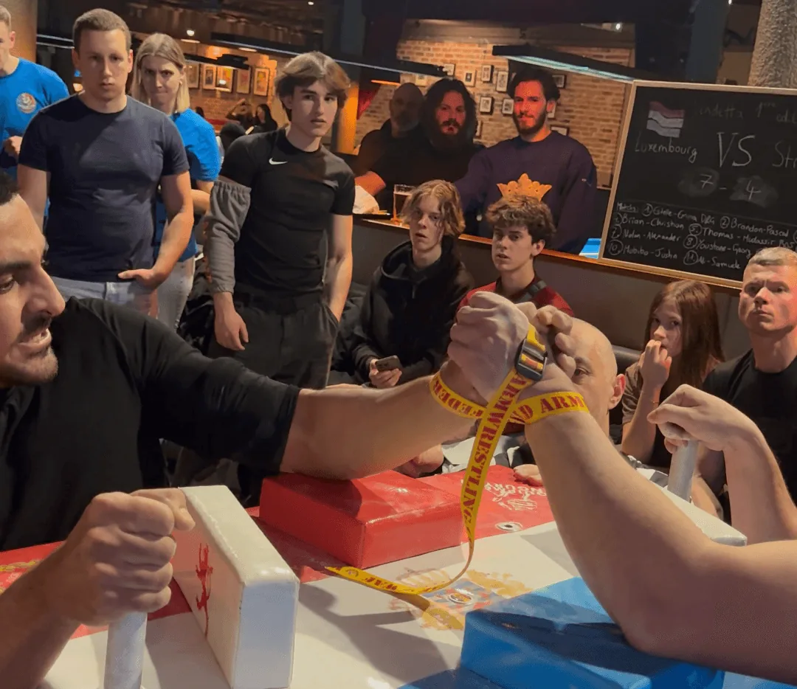

Der Armwrestling-Verein in Luxemburg. Training jeden Dienstag ab 18 Uhr in Strassen — erster Besuch kostenlos, Anfänger ausdrücklich willkommen.

Der Armwrestling Club Strassen ist einer der beiden offiziellen Armwrestling-Vereine in Luxemburg. Er befindet sich an der 86 rue des Romains in Strassen, direkt vor den Toren von Luxemburg-Stadt, und ist Mitglied der Luxembourg Armwrestling Federation (LAF) — dem offiziellen nationalen Verband. Mit einer einzigen LAF-Lizenz hast du Zugang zu beiden Vereinen.
Das Training findet jeden Dienstag ab 18 Uhr statt und ist offen für alle Niveaus — vom kompletten Einsteiger bis zum erfahrenen Athleten. Keine Voranmeldung nötig für den ersten Besuch.
Strassen liegt im Westen von Luxemburg-Stadt, direkt an den großen Verkehrsachsen — schnell erreichbar aus ganz Luxemburg und der deutschsprachigen Grenzregion (Trier, Saarland, Eifel, Moselgebiet). Hier die wichtigsten Auto-Fahrzeiten und alle Infos für deine Anfahrt nach Strassen:
Armwrestling — auf Deutsch auch Armdrücken genannt — ist ein offiziell anerkannter Kraftsport mit geregelten Wettkämpfen auf internationaler Ebene. Es geht nicht nur um rohe Kraft: Technik, Timing und taktisches Denken sind entscheidend.
Der Sport wird in Gewichtsklassen ausgetragen — du triffst also nie auf jemanden, der viel schwerer oder größer ist als du. Männer und Frauen trainieren gemeinsam, in allen Altersklassen.
Erster Besuch: Einfach dienstags um 18 Uhr erscheinen. Als Anfänger vorstellen — du wirst empfangen, eingeführt und kannst direkt am Tisch ausprobieren. Keine Ausrüstung nötig. Kostenlos und unverbindlich.
Mit einer LAF-Lizenz hast du auch Zugang zum Grizzly of Luxembourg in Munsbach — dem zweiten Armwrestling-Verein in Luxemburg. Das Training dort findet freitags ab 18 Uhr statt, etwa 20 Minuten von Strassen entfernt. Ideal, um zweimal pro Woche zu trainieren und mehr Sparring-Erfahrung zu sammeln.
86 rue des Romains, Strassen — 8 Min. von Luxemburg-Stadt, 45 Min. von Trier.
Placement, Griff, Sicherheit und erste Techniken — alles was du für die ersten Trainingseinheiten wissen musst.
Artikel lesen →Die Mechanik jeder Technik, ihre Stärken und wie man die richtige für sein Profil auswählt.
Artikel lesen →Wie ein Armwrestling-Turnier abläuft, was du mitbringen musst und was dich am ersten Tag erwartet.
Artikel lesen →